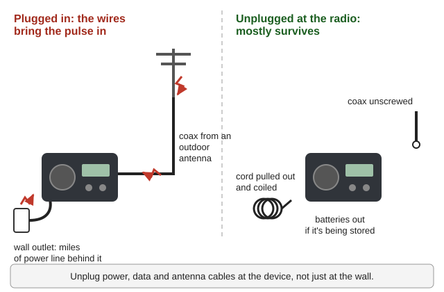
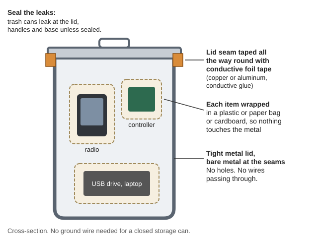
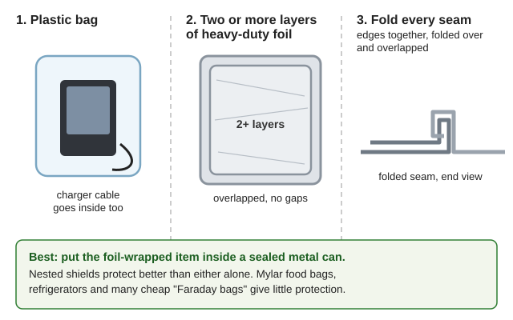
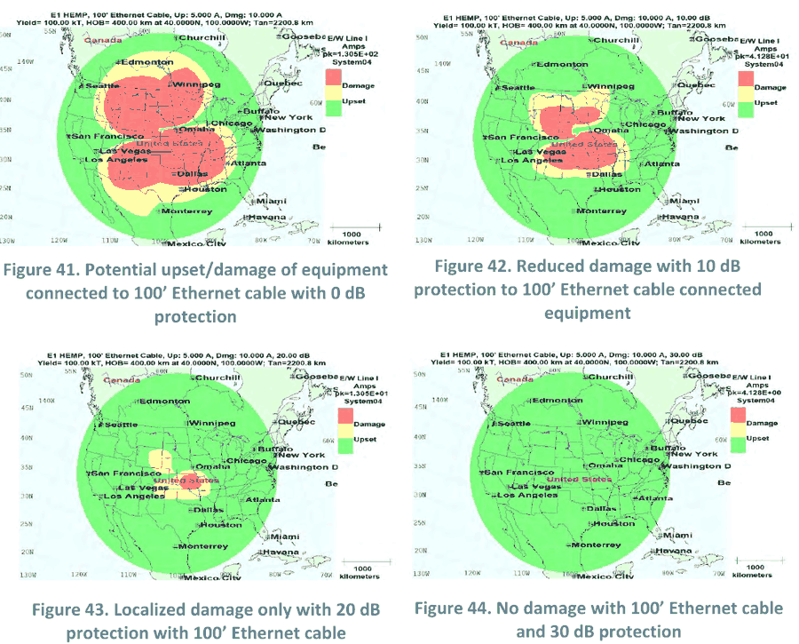

Guides › Disasters · Emergency · Index A–Z
What a nuclear electromagnetic pulse (EMP) or a severe solar storm would really do, how to protect radios, solar gear and this library, how to build and test a Faraday container, what to do when a solar-storm warning comes, and how to check and repair equipment afterward. It's based on what government tests actually measured, not internet stories. The reports are in EMP-Solar-Storms\ (Effects-and-Threat, Protection-Shielding, Grounding-Surge, Recovery).
The short version
- The danger comes in through long wires — power lines, antennas, long cables. Small gear that isn't plugged into anything mostly survives.
- Unplugged, switched-off cars and trucks were not affected in tests; a few running ones stalled and restarted.
- A solar storm threatens the power grid, not your phone. You'd likely get 18–72 hours' warning.
- The real long-term problem is the grid going down for months. Plan for that (see the off-grid power section of the Illinois Valley guide).
- Keep spares and a second copy of this library in a metal container, sealed at the seams.
| Nuclear EMP (a bomb exploded high above the U.S.) | Solar storm (geomagnetic storm, like 1859, 1921, 1989, May 2024) | |
|---|---|---|
| Warning | None | 18–72 hours after the Sun erupts; 20–45 min final warning (CISA, p. 21) |
| Parts | E1: a pulse rising in billionths of a second — hits electronics through wires and antennas. E2: like lightning over a huge area. E3: slow, seconds to minutes — like a solar storm (EMP Commission 2004, p. 13; the three parts drawn) | Like a weak, hours-long E3 only — no fast pulse (Geomagnetically induced current) |
| What it hits | Electronics connected to wires/antennas; computers and control systems; the power grid | Very long conductors: power lines, big transformers, pipelines, long phone cables. Also GPS and HF radio |
| What it doesn't | People (a high-altitude burst puts no radiation on the ground) | Unplugged phones, laptops, radios, cars, solar panels |
Why only long wires matter in a solar storm: the storm induces a few volts per kilometer — measured worst cases are about 7–20 V/km, and under 1.1 V/km in Colorado during the May 2024 storm (Meta-R-319; LANL 2024 storm study). A 6-ft cord sees hundredths of a volt; a 100-mile power line sees hundreds to thousands (rule of thumb arithmetic). In 1989 that was enough to collapse Quebec's grid in 90 seconds and destroy a large transformer in New Jersey — and big transformers take about a year to replace (Meta-R-319, p. 149; photo of transformer damage from the 1989 storm; map of how far the 1989 storm reached; March 1989 geomagnetic storm, Transformer).
E1 isn't the same strength everywhere: it's strongest south of the point under the burst, and averages only about a tenth of the peak over the affected area (Meta-R-320, p. 38; the "smile" map of E1 strength; how one high burst covers a continent). The 1962 test that showed it: Starfish photo, Starfish Prime.
📚 Go deeper: EMP Commission Executive Report — the plain overview; NOAA A Profile of Space Weather; Wikipedia: nuclear EMP · geomagnetic storm · Carrington Event.
| Claim | What testing showed |
|---|---|
| "Every car will die." | 37 cars and 18 trucks were tested up to about 50 kV/m. Vehicles that were off: no effects. Of running cars, 3 stalled (at 30 kV/m or more) and needed a restart; one had dashboard electronics damaged; most just had blinking lights. Of running trucks, 3 stalled — 2 restarted at once, 1 needed towing (EMP Commission 2008, p. 131). |
| "All electronics fry." | Handheld and vehicle radios — stored, idle or operating — had no damage up to 50 kV/m; some locked up and worked after switching off and on (EMP Commission 2008, p. 169). Plugged-in household gear: at 6.7 kV/m 20% were upset (fixed by power-cycling); at 16.6 kV/m about 6% were damaged — mostly items on antenna cables (Harry Diamond Labs, p. 44). |
| "Pocket radios are useless after." | Small battery radios weren't damaged unless near cables carrying huge currents (DCPA 1975). |
| "Solar panels get destroyed." | Panels hit with up to 100 kV/m showed only very minor change (Sandia, p. 39; panels in the test chamber); rooftop microinverters survived 20–60 kV pulses (Sandia microinverter tests). The surge travels down the panel wires toward the charge controller/inverter — that's the part to keep a spare of. |
| "A surge strip or the breaker protects me." | Lightning-rated surge suppressors don't stop E1 (Sandia TVSS tests; the suppressor tested); circuit breakers survive but give no real protection — some pulse passes even when they're off (Sandia, p. 6; the breakers tested). |
| "Ham radios are toast." | 15 ham stations survived repeated simulated pulses when the power cord was unplugged and the coax disconnected; with protectors on both lines they were also fine (NCS TIB 85-10; the power and antenna protectors). |
| "Networked computers will be fine." | They're the weak point — dispatch computers began failing at 3–6 kV/m, and every industrial control system tested failed (EMP Commission 2008). |
How the tests were done: the outdoor pulse simulator used on household gear; an EMP simulator with test buildings.
📚 Go deeper: EMP Commission Critical Infrastructures Report — vehicles, p. 131; Consumer Electronics Testing.
Wires are the antennas. Even a few feet of cable can pick up thousands of volts from E1; long power and antenna lines pick up far more (Low Cost EMP Protection (Navy 1982)). (CISA guidelines, p. 44; drawing: E1 reaches a radio the way a broadcast or lightning does)

Long power and antenna wires collect the pulse; unplug at the device, not just at the wall (a diagram drawn for this guide).📚 Go deeper: CISA EMP Protection and Resilience Guidelines — Level 1 steps, p. 44; NIST Surges Happen; MIL-HDBK-419A Vol 2 — grounding and surge arresters.
How it works: a closed metal shell keeps the pulse on the outside. It only works if the shell is continuous — the leaks are at seams, lid edges and holes, and a long narrow slot leaks far more than a round hole. Seams must be bare metal touching bare metal (no paint) (MIL-HDBK-419A Vol 1, p. 275; how fields leak through an opening; a badly joined seam, warped between rivets; Electromagnetic shielding). A plain metal box is not automatically a Faraday cage — ordinary cabinets gave little protection until their seams were taped and gasketed (Navy 1982).
Options, best to simplest (CISA, pp. 45, 86):

Wrap each item, tape the lid seam all the way round with conductive tape, and leave no holes or wires through (a diagram drawn for this guide).
Bag, then two or more layers of foil with folded seams, then, best of all, a sealed can (a diagram drawn for this guide).Weak or useless: Mylar food bags (little protection); refrigerators (plastic liner and rubber gasket); many cheap "Faraday bags" (the closure leaks).
Does it need a ground wire? No — a closed storage container doesn't need to be grounded (rule of thumb).
How good is good enough? For stored spare electronics, CISA considers 20 dB of shielding adequate (CISA appendix, p. 126); critical military gear uses 80 dB (DHS 2022). See the difference: modeled damage with 0, 10, 20 and 30 dB of protection; what "dB" means: Decibel.

Modeled damage to gear on 100-ft cables with 0, 10, 20 and 30 dB of protection: red is damage, yellow is upset (CISA, p. 77).Testing yours (and what it doesn't prove):
📚 Go deeper: CISA guidelines — foil and container methods, pp. 45 & 86; MIL-HDBK-419A Vol 1 — seams and slots, p. 275; Wikipedia: Faraday cage.
From CISA's list plus practical extras (rule of thumb where not cited):
Handheld gear with no long wires attached is fairly tough anyway; the container is cheap insurance (CISA, p. 45).
📚 Go deeper: ORNL — radio communications and spare-equipment procedures; CISA — Level 1 steps for small equipment, p. 44; Radio guide.
Pictures of where a storm starts: the May 2024 sunspot group; computer model of its eruptions heading for Earth; Coronal mass ejection, Sunspot. NOAA rates geomagnetic storms G1 to G5 (NOAA Space Weather Scales):
| Level | How often (per 11-year cycle) | What happens |
|---|---|---|
| G3 strong | ~200 | Grid voltage corrections; GPS and HF radio come and go; auroras as far south as Oregon (Aurora) |
| G4 severe | ~100 | Widespread grid voltage problems; some protection systems trip; GPS degraded for hours |
| G5 extreme | ~4 | Grid collapse and transformer damage possible; HF radio out 1–2 days; GPS degraded for days |
For a G4–G5 warning (rule of thumb):
Maps\) and use VHF/UHF locally.📚 Go deeper: NOAA scales, p. 1; LANL May 2024 storm study; Wikipedia: May 2024 solar storms.
Repair skills — finding and replacing burned parts, using a multimeter, soldering, salvaging parts — are in the electronics section of the Make-Do Household Guide and the Navy NEETS modules in Off-Grid-Power\Electrical-Basics.
📚 Go deeper: ORNL HEMP Emergency Planning for Electric Power Systems — why grid recovery is slow; EMP Commission 2008.
Look before you try it. 🖼️ = drawings in the books on this drive; 📷 = photos in the offline Wikipedia.
The two threats
How the tests were done
Wires, surges and unplugging
Faraday containers
Solar storms
Checking gear afterward